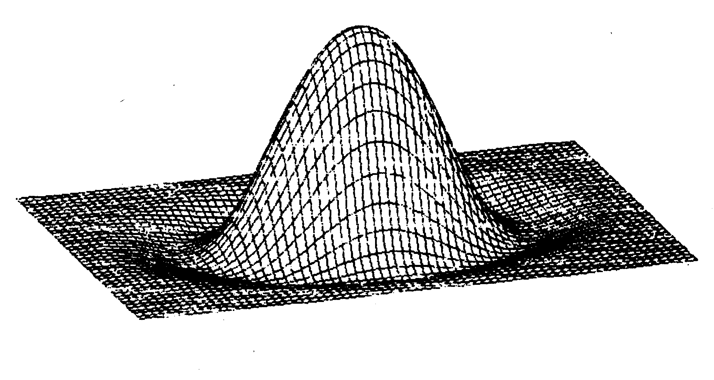

Tips & Tricks kunterbunt
Auf den nächsten Seiten finden Sie eine Auswahl an hervorragenden Programmen, Unterroutinen und Programmiertips für fast jeden Gebrauch. Erwähnenswert sind vor allem ein außergewöhnliches Turbo-Tape und ein neuartiges Prinzip der Dateiverwaltung, das sich auch hervorragend als Lernprogramm für angehende Taxi-Fahrer eignet.
Unsere beliebte Tips&Tricks-Rubrik aus dem 64'er-Stammheft hat einen nicht unerheblichen Nachteil: Viele nützliche und sehr gute Programme sind einerseits zu kurz für einen eigenständigen Artikel, aber andererseits auch zu lang für eine Veröffentlichung unter »Tips & Tricks«. Im Laufe der Zeit hat sich da natürlich eine ganze Menge an Programmen angesammelt. In diesem Sonderheft haben wir nun die Gelegenheit, diesen Stapel auszubauen und Ihnen eine geballte Ladung von Tips&Tricks-Listings zu präsentieren.
Übrigens: Wenn Sie noch kein routinierter 64'er-Leser sind, sollten Sie vor dem Abtippen unbedingt unsere Eingabehinweise zum Checksummer und dem MSE auf den Seiten 119 und 120 lesen.
Der (fast) perfekte Listschutz
Bei diesem Programm »Invisible« (Listing 1) handelt es sich um eine Hilfe zur Listschutzerstellung. Nach Behandlung eines Basic-Programms mit »Invisible« sind davon nur noch die Zeilennummern sichtbar. Dies wird durch fünf hinter die Zeilennummer eingefügte Doppelpunkte erreicht, von denen der erste durch ein Null-Byte ersetzt wird.
Das ist soweit nichts Besonderes, doch mußte man bei ähnlichen Arten des Listschutzes bisher die Doppelpunkte von Hand einfügen. »Invisible« nimmt Ihnen diese Arbeit ab. Es fügt auf Tastendruck pro Zeile fünf Doppelpunkte ein. Zeilen, in die keine fünf Zeichen mehr passen, werden nicht verändert.
Ebenfalls auf Tastendruck werden die »Doppelpunktzeilen« unsichtbar gemacht. Hier bleiben Zeilen mit einer falschen Zahl an Doppelpunkten unberücksichtigt.
Will man sein Programm wieder sehen, sei es, um es zu ändern oder nur aus Spaß an der Freude, so kann man mit »Invisible« sämtliche Zeilen, die wie oben beschrieben geschützt wurden, wieder sichtbar machen. Sogar die fünf Doppelpunkte werden wieder entfernt. Hier bleiben nun Zeilen mit weniger als fünf Doppelpunkten unverändert (sie waren zuvor ja auch nicht geschützt).
Beschreibung der einzelnen Programmteile:
1. Doppelpunkte einfügen:
Als erstes wird die Startadresse der ersten Zeile in die Variable »by« geschrieben. Dann wird deren Zeilennummer in »lb« und »hb« festgestellt. Es folgt dann noch die Adresse der nächsten Zeile. Die Werte dieser Variablen müssen in Speicherzellen mit POKE zwischengespeichert werden, da sie bei der Änderung der Zeilen während des Einfügens der Doppelpunkte gelöscht werden würden.
Nun wird in der Variablen »bn« die Adresse der nächsten Zeile aus »12« und »h2« berechnet. Diese wird zur Bestimmung der Zeilenlänge benötigt. Es folgt noch eine Abfrage auf eventuell bereits vorhandene Doppelpunkte.
Steht in der Zeile kein Doppelpunkt, so wird der Bildschirm gelöscht und ein »LIST aktuelle Zeile« sowie ein »GOTO....« links oben auf den Bildschirm geschrieben. Dies wird für den nachfolgenden Direktmodus benötigt. Es wird nun anhand der Länge der Zeilennummer und der restlichen Zeile berechnet, wie viele Zeilen man mit Hilfe des Tastaturpuffers nach unten gehen muß, um auf das »GOTO...« zu kommen.
Nun wird noch die Länge der Zeilennummer festgestellt, da sie zum Einfügen der Doppelpunkte übersprungen werden muß. Dies geschieht in den Zeilen 63032 und folgende.....
Jetzt wird die zu bearbeitende Zeile gelistet. In Zeile 63240 wird mit Hilfe von Steuerzeichen alles, was hinter einer Zeilennummer steht, um fünf Zeichen nach rechts verschoben, wobei dann die Doppelpunkte eingefügt werden.
2. Doppelpunkte löschen:
Dieser Programmteil läuft ziemlich genauso ab wie der Teil »Doppelpunkte einfügen«. Lediglich die Abfrage der Doppelpunkte und deren »Einfügen« ist anders: Es wird nicht abgefragt, ob schon ein Doppelpunkt vorhanden ist, sondern ob es deren genau fünf sind. Statt dem Einfügen der Doppelpunkte werden diese mit fünf Leerzeichen überschrieben.
3. Doppelpunktzeichen unsichtbar machen:
Das Bestimmen der Zeilendaten geht analog zu den vorigen Teilen. Dann werden die ersten sechs Byte aus der eigentlichen Basic-Zeile gelesen und auf Doppelpunkte überprüft. Sind die ersten fünf Byte Doppelpunkte, so wird in das erste dieser fünf Byte eine Null gePOKEt. Dadurch listet der Computer nur noch die Zeilennummern.
4. Zeilen wieder sichtbar machen:
Im Unterschied zur vorherigen Routine wird hier geprüft, ob das erste Byte (in »a« gespeichert) eine Null und die restlichen vier Byte Doppelpunkte (Code 58) sind. Es stehen also wieder fünf Doppelpunkte hinter der Zeilennummmer und das Programm läßt sich wieder vollständig LISTen.
5. Löschroutine:
Hier wird die vorgegebene Zeilennummer (63000) in die linke obere Ecke des Bildschirms geschrieben und mittels des bereits oben beschriebenen »programmierten Direktmodus« in der ersten Zeile des Bildschirms (in der die Zeilenzahl steht), ein »carriage return« ausgeführt. Dadurch wird die Zeile gelöscht.
So arbeitet man mit »INVISIBLE«
- Laden des zu bearbeitenden Programms.
- Eingeben: POKE 43, PEEK(45)-2:POKE 44,PEEK(46)
In seltenen Fällen kann es passieren, daß der C 64 einen »illegal quantity error« meldet (Ihr Programm hat dann eine ungünstige Endadresse). Dies läßt sich beheben, indem Sie noch irgendwo eine Zeile einfügen (zum Beispiel ein REM), und die POKEs noch einmal eingeben.
- Laden von »Invisible« (Listing 1)
- Eingeben: POKE 43,1 : POKE 44,8
- Starten von »Invisible« mit »RUN 63000«.
Besondere GOSUBs
Da das C 64-Basic nicht über Label verfügt, habe ich ein Programm geschrieben, mit dem in Unterprogramme mit beliebigem Namen gesprungen werden kann. Im Programmlisting erscheint an Stelle des GOSUB-Befehls nur der Name des entsprechenden Unterprogramms. Dadurch wird die Lesbarkeit des Programms wesentlich verbessert und die Unterprogramme können frei verschoben werden, ohne Einsprungadressen verändern zu müssen. Mit einer geeigneten MERGE-Routine kann man nun aus einer Unterprogrammsammlung bequem Programme zusammenstellen. Die Benutzung sieht wie folgt aus: Auf ein vorangestelltes Ausrufezeichen folgt der Name des aufzurufenden Unterprogramms gefolgt von einem abschließenden Doppelpunkt. Alle Zeichen zwischen dem Ausrufezeichen und dem Doppelpunkt werden als Name interpretiert. Falls Basic-Befehlsworte im Namen vorkommen, muß der Name in Anführungszeichen gesetzt werden.
Damit das Unterprogramm gefunden werden kann, steht am Anfang des Unterprogramms eine REM-Zeile, gefolgt vom Namen des Unterprogramms. Dabei ist zu beachten, daß bei Basic-Befehlsworten die Anführungszeichen auch in der REM-Zeile stehen müssen. Listing 2 zeigt die eigentliche Befehlserweiterung; Listing 3 ein kleines Anwendungsbeispiel.
(Norbert Reuber/tr)Windows leichtgemacht
Da in den meisten Programmen Menüs benötigt werden, und ich das entsprechende Unterprogramm bis jetzt jedesmal neu und in Basic verfaßte (was schlechte Benutzerfreundlichkeit und langsame Ausführungsgeschwindigkeit nach sich zog), entschloß ich mich, ein universelles Menü-Programm als Basic-Erweiterung in Assembler zu schreiben. Listing 4 zeigt das Ergebnis:
Merkmale:
— beliebig auf dem Bildschirm plazierbares Fenster mit Überschrift.
— frei definierbare Abbruchtaste (zum Beispiel für Undo-Funktion).
— Auswahl des Menüpunktes mit den Cursortasten und »RETURN« oder (wahlweise) wird jedem Menüpunkt (soweit möglich) ein Buchstabe zugeordnet, durch den er direkt aufgerufen werden kann.
— wahlweise wird der Bildschirm nach Verlassen des Menüs wieder hergestellt (oder später mit dem Basic-Befehl »KILLM«). Listing 5 zeigt ein Anwendungsbeispiel in Form einer simulierten Textverarbeitung.
Handhabung:
Laden Sie das Programm »XMENU« absolut von Diskette (anschließend »NEW« eingeben) und starten es mit »SYS 50175«. Ab jetzt stehen Ihnen zusätzlich folgende zwei Befehle zur Verfügung.
— MENU <x>, <y>, <l>, <p>, <t>, <m>, <s>, <ar>, <rv>
— KILLM
Mit »MENU« wird das Menü dargestellt und ausgeführt. Hier die Bedeutung der Parameter:
| <x> | X-Koordinate. Bereich von 0 bis 35 |
| <y> | Y-Koordinate. Bereich von 1 bis 20 |
| <l> | Breite der Menüpunkte. Bereich von 1 bis (36-x) |
| <p> | Anzahl der Menüpunkte. Bereich von 1 bis 11-int(y/2+.5) |
| <t> | ASCII-Code der Abbruchtaste (möglichst nicht 65 bis 90, da sonst die Tastaturwahl beeinträchtigt wird). |
| <m> | Auswahlmodus. Bereich von 0 bis 255. 0: keine Tastaturauswahl; ungleich 0: Tastaturauswahl erlaubt. |
| <s> | Temporärmodus. Bereich von 0 bis 255 0: Hintergrund wird nach Verlassen des Menüs nicht (sofort wieder hergestellt); ungleich 0: Hintergrund wird sofort wieder hergestellt. |
| <ar> | Eindimensionales Stringarray. Der Index ist der der Menü-Überschrift und zugleich die Basis für die Menüpunkte. Sollte das Array weniger als <p>+Index Elemente haben, so gibt es ein »Gewurschtel« auf dem Bildschirm. |
| <rv> | Numerische Variable. Enthält nach dem Aufruf die Nummer des Menüpunktes oder Null bei einem Abbruch. Achtung! Sollte die Variable vor dem Aufruf »MENU« nicht definiert sein, so gibt es ein Wirrwarr auf dem Bildschirm, da die Arraytabellen verschoben wurden. Der Befehl »KILLM« (ohne Parameter) holt den vor dem Aufruf von »MENU« gespeicherten Bildschirm in den aktuellen Bildschirm (das gleiche passiert, wenn der Temporärmodus eingeschaltet ist). |
Technische Details
Das Programm befindet sich nach dem (absoluten) Laden im Speicher von $C000 bis $C4E4. Nach dem Aufruf mit SYS 50175 wird der Basic-Befehls-Vektor ($0308/$0309) auf $C3FF verbogen. In der Zeropage wird, während das Menü dargestellt wird, der Bereich von $A3 bis $AF benützt. Außerdem werden der Bildschirm und zwei Arrays im Bereich von $D000 bis $D423 zwischengespeichert.
Der Assembler-Programmierer kann den Programmteil von $C3FF bis $C4E5 ignorieren. Die Parameter müssen nur in die Tabelle von $C3F6 bis $C3FE eingetragen und das Programm ab $C000 angesprungen werden. Der Befehl »KILLM« kann durch SEC, JSR $C39D ersetzt werden.
Um XMENU in einen anderen Bereich zu verschieben, sind folgende Schritte nötig:
- Der Bereich von $C000 bis $C4E4 muß nach der neuen Anfangsadresse verschoben werden (im folgenden Basis genannt).
- Alle 3-Byte-Befehle, die sich auf den Bereich von $C000 bis $C4E4 beziehen, müssen an den Bereich von der Basis bis Basis +$4E4 angeglichen werden.
(V-Befehl bei SMON).
- Disassemblieren Sie den Bereich <Basis+$3FF> bis <Basis+$402>. Ersetzen Sie nun den Parameter des LDA-Befehls durch das Low-Byte und den Parameter des LDY-Befehls durch das High-Byte von <Basis+$40A>.
- Disassemblieren Sie den Bereich <Basis+$40D> bis <Basis+$410>. Ersetzen Sie (wie in 3.) die entsprechenden Parameter der LDA-/LDY-Befehle durch das Low- beziehungsweise High-Byte von <Basis+$4DA>.
- Disassemblieren Sie den Bereich <Basis+$41D> bis <Basis+$420>. Ersetzen Sie nun (wie in 3. und 4.) die Parameter der LDA-/LDY-Befehle durch das Low-/High-Byte von <Basis+$4DF>.
Die Initialisierungsadresse entspricht der Basis+$3FF.
Die einzelnen Routinen
| Bezeichnung | Abstand zur Basis | Beschreibung |
|---|---|---|
| MENU | $0000=0 | Maschinenroutine zum Darstellen des Menüs |
| KILLM | $039D=925 | Danach: Angewählter Menüpunkt im Akku. Carry gelöscht: Hintergrund wird gespeichert. Carry gesetzt: Hintergrund wird wieder hervorgeholt. |
| X | $03F6=1015 | X-Koordinate |
| Y | $03F7=1016 | Y-Koordinate |
| L | $03F8=1017 | Breite |
| P | $03F9=1018 | Anzahl M.-Punkte |
| T | $03FA=1019 | Abbruchtaste |
| M | $03FB=1020 | Auswahlmodus |
| S | $03FC=1021 | Temporärmodus |
| AR/L | $03FD=1022 | Low-Byte des Zeigers auf Array-Tabelle (T.Format: Länge, Low-/High-Byte Adr. String). |
| AR/H | $03FE=1023 | High-Byte des Zeigers auf Array-Tabelle |
Um sich mit den Fähigkeiten des Programms vertraut zu machen, sollten Sie unbedingt das Demo-Programm durchstudieren.
(Daniel Buchheit/tr)Das besondere Turbo Tape
»Extratape« ist ein Schnellladeprogramm für den C 64 und Datasette. Es erlaubt jedem, ohne aufwendiges Herumspulen, seine Programme jederzeit mit 8- bis 9facher Geschwindigkeit zu laden.
Das Besondere an »Extratape« ist, daß man zum Laden des Programms das Extratape-Programm nicht mehr benötigt! Die schnelle Laderoutine ist nämlich als kurzer Vorspann direkt vor dem gespeicherten Programm vorhanden. Man kann ein so behandeltes Programm also ganz normal mit »LOAD« laden.
Nachdem man das Maschinenprogramm (Listing 6) mit dem MSE eingegeben und auf Kassette oder Diskette gespeichert hat, muß man es wie ein Basic-Programm laden und mit »RUN« starten. Nach dem Start wird vom Programm der Save-Vektor ($0332/0333) auf eine eigene Save-Routine bei $CDE0 verbogen. Diese Routine simuliert ein neues Gerät mit der Gräteadresse 7, nämlich die Fasttape-Datasette. Speichert man nun ein Programm mit der Geräteadresse 7, zum Beispiel »SAVE"TEST",7«, so erscheint die Aufforderung, <Record> und <Play> zu drücken, und das Programm wird mit ungefähr 9facher Normalgeschwindigkeit auf Band geschrieben.
Man sollte übrigens bei Benutzung von »Extratape« keine Superbillig-Kassetten (Kaufhaus-Sonderangebot Wühltisch für 98 Pfennige) verwenden, da sonst häufig Ladefehler auftreten können. Diese werden durch einen »I/O ERROR« am Ende des Ladevorgangs angezeigt. Ladefehler können auch durch das Ein-/Ausschalten großer Elektrogeräte in der Nähe des Computers (zum Beispiel Staubsauger, Elektroheizung im gleichen Raum und so weiter) auf das Band gebracht werden. Deshalb empfiehlt es sich, bei wichtigen Programmen nach dem Speichern eine Kontrolle (durch Laden in den Computer) durchzuführen.
Die gespeicherten Programme laufen zwar trotz angezeigtem Fehler meist einwandfrei, aber es ist dennoch unschön, einen Fehler auf der Kassette zu haben. Wem diese Fehler zu häufig auftreten, obwohl die Programme immer laufen, der kann die Fehlerabfrage mit »POKE 52951,208« und »POKE 52952,16« (vor dem Speichern eines Programms) abschalten. Eventuell auftretende Fehler werden nun nicht mehr angezeigt.
Der Grund für diese relativ hohe Fehleranfälligkeit ist, daß in einer Sekunde ungefähr 3830 Impulse (Bit) auf das Band geschrieben werden. Und das wären dann 425 Byte in einer Sekunde! (Es werden neun Bit für ein ganzes Byte benötigt, da immer ein Bit zur Synchronisation dient.) Mit dieser Geschwindigkeit übertrifft man sogar die Floppy (zirka 300 Byte in der Sekunde).
Es fällt auch auf, daß nach dem SAVEn eines Programmes die Schriftfarbe immer auf Schwarz steht. Dieser Effekt kommt dadurch zustande, daß die spätere Laderoutine beim Speichern an den Namen des Programmes angehängt wird, und so das Ladeprogramm als wirrer Zeichensalat hinter dem »SAVING« kurz auf dem Bildschirm erscheint.
Mit einigen POKEs ist es auch möglich, ein Maschinenprogramm absolut (also an seiner Originaladresse) zu speichern: Man muß nur die Zeiger auf Programmstart und -ende in den Speicherstellen 43/44 (Start) und 45/46 (Ende) auf Start und Ende des Maschinenprogramms einstellen. Man muß allerdings aufpassen, daß »Extratape« ($CDE0 bis $CFE0) nicht überschrieben wird (Das gäbe beim nächsten SAVE-Befehl einen richtig schönen Systemabsturz...). Auch bei normalen Programmen sollte man darauf achten, daß dieser Bereich nicht gelöscht wird. Extratape läuft übrigens einwandfrei mit vielen Floppy-Speedern zusammen.
(P. Plamper/tr)Spitzengrafiken auf MPS-802
Mit dem Programm »Support-802« wird es auch den MPS-802-Benutzern ermöglicht, die wirklich erstklassige Basic-Erweiterung »MPS-Support« zu benutzen (Auflösung: 640 x 400 Punkte!). Die Druckroutine hat dieselben Funktionen wie die in der 64'er, Ausgabe 2/86, veröffentlichte. Die einzelnen Befehle und ihre Bedeutung entnehmen Sie deshalb bitte dem 64'er-Heft.
Beim Abtippen gehen Sie wie folgt vor:
- Falls Sie es noch nicht getan haben, tippen Sie das Programm »MPS-Support« aus der 64'er, Ausgabe 2/86, mit Hilfe des MSE ab und speichern es auf Diskette.
- Jetzt tippen Sie Listing 7 mit dem MSE ab und speichern es unter dem Namen »dump 802« auf Diskette.
- Laden Sie jetzt bitte »dump 802« absolut (also ,8,1) und geben Sie »NEW« ein.
- Nun laden Sie MPS-Support aus Ausgabe 2/86.
- Wenn Sie »SYS 49152« eingeben, wird die neue DUMP-Routine ins MPS-Support integriert und das ganze Programm unter dem Namen »support 802« auf Diskette gespeichert. Es ist jetzt ein Block länger geworden, aber Sie können es wie gewohnt laden und starten.
In Bild 1 sehen Sie eine Netzgrafik, die mit »support 802« ausgedruckt wurde.

Die Programmservice-Diskette enthält natürlich das fertige Programm »support 802«.
(Oliver Koch/tr)Nachfolgend eine kurze Befehlsübersicht. Die genaue Bedeutung finden Sie in der Ausgabe 2/86 ab Seite 59.
GRAPHIC / TEXT / WINDOW A,B / UPDATE / ZOOM INCREASE A,B / RESTART / CLEAR / COLOUR A,B,C / DOT A,B / CDOT A,B / LINE A,B,C,D / CLINE A,B,C,D / TEST A,B / PATTERN A / CHAR A,B,C / DUMP
POLY A,B,C,D,E,F,G,H
CPOLY A,B,C,D,E,F,G,H
FPOLY A,B,C,D,E,F,G,H
EPOLY A,B,C,D,E,F,G,H
Die Statuszeile
Dieses kurze Programm wurde aus der Not geboren, daß bei einem Dateiprogramm in Basic laufende Informationen über den aktuellen Zustand des Programms (aktueller Modus, freier Speicherplatz, Fehlerkanal der Floppy etc.) benötigt wurden.
Das Programm »Statuszeile« (Listing 8) ist leicht von Basic aus zu handhaben und löst das genannte Problem. Es wird mit »SYS 12*4096« gestartet. Listing 9 zeigt, wie man den Text im Speicher ablegen muß.
Programmerklärung (siehe dazu auch Listing 10)
In der »INIT«-Routine werden die Zeiger des Interrupt auf das Programm verbogen. Ab »START« liegt das eigentliche Programm. In der Schleife »LOOP« wird der Text (indirekt adressiert mit x) gelesen und in den Bildschirmspeicher abgelegt. Ab »END« wird mit Hilfe der Betriebssystemroutine »PLOT« die Cursorposition gelesen. Ist der Cursor innerhalb der ersten beiden Zeilen, wird er mit der Routine »SET« in die dritte Zeile gesetzt. »AUS« lenkt den Interrupt auf die normale Interruptroutine im Betriebssystem.
Wird mit SYS 49283 die Routine »STOP« aufgerufen, wird der IRQ-Zeiger wieder auf den ursprünglichen Wert gesetzt und das Programm somit abgeschaltet. Die Hintergrundfarbe der Statuszeilen läßt sich in Speicherstelle $C016 = dezimal 49174 verändern. Der Text, der maximal 80 Zeichen umfassen kann, liegt ab dezimal 49203 und kann dort direkt hineingePOKEt werden. In Listing 9 wird in der Zeile 110 gezeigt, wie man das macht.
Das Assemblerlisting ist ausführlich dokumentiert, um auch Anfängern das Leben leicht zu machen.
Mit anderen Programmen, die den Interrupt beeinflussen, wird dieses Programm ohne Anpassung nicht laufen.
(Uwe Wiards/tr);statuseinblendung im interupt
; uwe wiards
; 2874 lemwerder
; assi-fse-assembler 4.12 (c) d.zabel
;2statuszeilen = max 80 zeichen
;ab startadresse + dez 51 text!
*=$c000 ;programmadresse
nzei=2 ;anzahl der zeilen
nlett=40*nzei ;anz. buchst.
irqv=$0314 ;irq-pointer
plot=$fff0 ;plot cursor pos l/s
norm=$ea31 ;norm irq
scrb=$0400 ;screenbeginn
farb=$d800 ;farbram beginn
init sei ;irq aus
lda#<start ;pointer irqv
sta irqv ;auf
lda#>start ;start setzen
sta irqv+1 ;lo u. hi-byte
cli ;irq ein
rts
start ldx#$00 ;x initalisieren
loop lda text,x ;adr text + x
sta scrb,x ;adr scrb + x
lda#$01 ;farbe
sta farb,x ;setzt farbe
inx ;x=x+1
cpx#nlett ;vergleiche
beq end ;0 dann end
jmp loop
end sec ;carry setzen plot liest
jsr plot
cpx#nzei
bpl aus
set clc ;carry loe. plot schreibt
ldx#nzei
jsr plot
aus jmp norm
text .text "STATUSZEILENEINBLENDUNG "
.text "BY UWE WIARDS "
.text "ACHTZIG ZEICHEN TEXT "
.text "REST AUFFUELLEN "
stop sei
lda#<norm ;irq-pointer
sta irqv ;auf normwert
lda#>norm ;zuruecksetzen
sta irqv+1
cli
rts
Drei nützliche Befehle
Die Befehlserweiterung »renumber« (Listing 11) stellt Ihnen drei sehr nützliche Befehle zur Verfügung. Als erstes sollten Sie das Programm mit Hilfe des MSE eingeben und speichern. Danach laden Sie es wie ein normales Basic-Programm und starten es mit »RUN«. Der Wortschatz Ihres C 64 umfaßt nun einige neue Kommandos:
| »-BYE« | Schaltet diese Befehlserweiterung aus. |
| »-OLD« | Holt bereits mit »NEW« gelöschte Programme wieder in den Speicher zurück. |
| »-RENUMBER x,y« | Numeriert das gesamte Programm neu. Alle Zeilennummern hinter (ON..)GOTO,GOSUB,LIST und RUN werden dabei berücksichtigt. |
| »-UNPACK x,y« | Zieht alle Befehle, soweit dies sinngemäß erlaubt ist, in extra Zeilennummern. |
| »-PACK x,y,z« | Fügt die einzelnen Befehle eines Programmes so eng wie möglich zusammen. |
x,y und z sind hier Variablen für Zahlen zwischen 0 und 63999, wobei x (Defaultwert 0) die Anfangszeilennummer des neuen Programmes, y (Defaultwert 1) den Abstand der einzelnen Zeilennummern und z (Defaultwert 253) die maximale Zeilenlänge in Bytes darstellen.
Es ist so auch möglich, eine kleinere Zeilennummer einer größeren folgen zu lassen (zum Beispiel zum Programmschutz). Man muß hier nur die Anfangszeilennummer oder die Schrittweite groß genug wählen. (Das kommt daher, daß die Summe zweier 16-Bit-Zahlen eine 17-Bit-Zahl ergeben kann, wobei das 17. Bit aus Speicherplatzmangel intern unter den Tisch fallengelassen wird.) Inwieweit dies sinnvoll ist, sei jedem selbst überlassen. Es sei aber vielleicht noch erwähnt, daß weder der Basic-Interpreter noch dieses Programm bei einem Sprungbefehl eine kleinere Zeilennummer hinter einer größeren vermuten (Fehlermeldung).
Die Defaultnummer der maximalen Zeilenlänge (z) wurde aus gutem Grund »nur« auf 253 gesetzt. Bei diesem Wert ist noch ein einwandfreies Laden, Listen und Verbessern möglich.
Wird z größer als 253 gewählt, so können folgende Probleme auftreten:
a) Beim Laden erscheint kein Cursor mehr. Dies tritt auf, weil der Basic-Interpreter nach jedem Laden versucht, das Basic-Programm neu zu »binden«. Falls 256 Byte lang kein 00-Byte auftritt, sucht er sich praktisch zu Tode. Abhilfe schaffen (vor dem Laden) folgende Eingaben:
POKE44,191
LOAD"name",8,1
POKE44,8
b) Ein List-Befehl listet nicht mehr das gesamte Programm. Falls eine Zeile mit mehr als 253 Zeichen auftritt, so werden nur diese aufgelistet und dann abgebrochen.
Es ist jetzt auch nicht mehr möglich, das Programm zu verändern (Programmierschutz).
Eine dritte Schwierigkeit wird vom Programm selbständig behoben. Ein Sprungbefehl über 253 Nicht-Null-Bytes einer Zeile ist nicht möglich.
Das Programm akzeptiert auch offengelassene Anführungsstriche und schließt sie bei einem Pack-Befehl selbständig.
Beispielsweise wird das folgende Basicprogramm
5 PRINTCHR$(147);:B$=""
10 IFLEN(B$)<255 THENGETA$:B$=B$+A$
15 PRINTB$:POKE53281,PEEK(53281)-1:GOTO10
durch »-UNPACK« zu
0 PRINTCHR$(147);
1 B$=""
2 IFLEN(B$)<255THENGETA$:B$=B$+A$
3 PRINTB$
4 POKE53281,PEEK(53281)-1
5 GOTO2
und durch »-PACK 5,5« wieder zu ersterem.
Daß das Programm arbeitet, sieht man an dem blinkenden Stern am Bildschirmrand rechts oben.
Bei einem »PACK«-Befehl ändert der Stern mehrmals die Farbe, da hier zusätzlich ein »UNPACK«- und ein »RENUMBER«-Befehl durchgeführt wird.
Fehlermeldungen
Während der Arbeit gibt das Programm Fehlermeldungen in folgendem Format aus:
| xx yyyyy zzzzzzz, | wobei |
| xx | eine interne Fehlernummer, |
| yyyyy | die neue Fehlernummer, in welcher der Fehler auftritt |
| zzzzzzz | die Fehlermeldung selber ist. |
Es gibt folgende Fehlermeldungen:
| Syntax error | Eventuelle Variablen als Sprungadressen können nicht geändert werden. |
| No such line | Sprungbefehl zu einer nicht existierenden Zeile |
| Illegal line number | Zeilennummer zu groß |
Zeilennummern, die nicht gefunden werden, werden bei den letzten beiden Fehlern einheitlich in 64000 geändert. Hier besteht keine »Verwechslungsgefahr«, da in Basic keine Zeilennummern ab 63999 eingegeben werden können.
Sonstiges
Das Programm benötigt nur den Speicherbereich von $C000 bis $CFFF. Zu eventuellen Programmiererweiterungen verhält sich »renumber« tolerant, sofern sich nicht die Speicherbereiche überlappen. Hierzu sollte »renumber« als letzteres geladen werden. Zweimaliges Initialisieren führt zum Absturz.
(Michael Rothmeier/tr)Die etwas andere Dateiverwaltung
»TAXI-SCHOOL« (Listing 12) ist ein System, welches die Erstellung von Dateien mit maximal 512 Zeilen x 24 Zeichen erlaubt. Das Besondere an diesem System ist die Möglichkeit, die einzelnen Zeilen auf bestimmte Weise zu verknüpfen.
1. Starten des Programms
— Laden Sie das Programm mit »LOAD"TAXI-SCHOOL",8«
— Starten Sie das Programm mit »RUN«
— Das Programm verwendet einen anderen Zeichensatz (Listing 13), als ihn der C 64 zur Verfügung stellt. Dieser Zeichensatz wird automatisch geladen. Er muß auf der Diskette unter dem Namen »SIGNS« gespeichert sein. Er beinhaltet einige Sonderzeichen, die zusammen mit der Commodore-Taste aufgerufen werden können.
— Wollen Sie einen eigenen Zeichensatz verwenden, so muß dieser unter dem Namen »SIGNS« auf Diskette gespeichert sein und von $C000 bis $C800 gehen (also nur ein einfacher Zeichensatz von 256 Zeichen).
2. Editieren von Dateien
— Es stehen 512 Zeilen x 24 Zeichen zur Verfügung.
— Eine Zeile wird durch <RETURN> in den Speicher übernommen.
— <HOME> setzt den Cursor an den Anfang der Zeile.
— <CLR> löscht die Cursorzeile (der Speicher bleibt dadurch unberührt.
— <CTRL @> löscht den gesamten Speicher.
— Die Cursortasten haben ihre übliche Funktion.
Funktionstasten:
F2: insert
— Alles ab Cursorzeile wird um eine Zeile hinuntergeschoben. Die Cursorzeile wird dadurch für einen Eintrag frei.
— Diesen Befehl sollten Sie nicht mehr verwenden, wenn Sie die »BASIS-STREET«-Beziehungen bereits festgelegt haben (siehe dazu etwas weiter unten).
F4: delete
— Die Cursorzeile wird gelöscht. Alle übrigen Einträge rücken auf.
— Für diesen Befehl gilt das gleiche wie für den Insert-Befehl.
3. Laden und Speichern von Dateien
F6: load
— Die Zeichen links vom Cursor werden als Filename interpretiert und der Befehl »LOAD"(FILENAME)",8,1« ausgeführt.
— Wurde ein $-Zeichen eingegeben, so erscheint das Inhaltsverzeichnis der Diskette.
F8: save
— Die Zeichen links vom Cursor werden als Filename interpretiert und der Befehl »SAVE"(FILENAME)",8,1« ausgeführt.
— Es wird von der ersten bis zur Zeile über dem Cursor (einschließlich) unter dem angegebenen Filenamen auf der Diskette gespeichert.
4. Die BASIS-STREET-Verbindungen
Das Programm gibt Ihnen die Möglichkeit, zu jeder der 512 Zeilen 20 Zeilen als Unterzeilen zu bestimmen. Eine Unterzeile bezeichnen wir mit »STREET«. Jede Zeile ist »BASIS«, aber nur die auserwählten Zeilen sind »STREETS«.
Wollen Sie eine Zeile als »STREET« kennzeichnen, so muß vorher festgelegt worden sein, welche Zeile die »BASIS« ist.
F3: basis
— Bringen Sie den Cursor in die Zeile, die die »BASIS« sein soll.
— Drücken Sie <F3>.
— Bis zum nächsten <F3> liegt die »BASIS« nun fest.
F5: street
— Bringen Sie den Cursor in die Zeile, die Sie als »STREET« kennzeichnen wollen.
— Drücken Sie <F5>.
— Die Zeile wird als »STREET« zur aktuellen »BASIS« gekennzeichnet.
Wollen Sie zu einer beliebigen Zeile die dazugehörigen »STREETS« auflisten lassen, so benutzen Sie dazu den Drive-Befehl <F7>. Dazu muß in der Cursorzeile der Inhalt der Zeile stehen, zu der Sie die »STREETS« auflisten wollen. Dies können Sie erreichen, indem Sie den Cursor in die entsprechende Zeile bringen oder den Text in die aktuelle Zeile schreiben.
F7: drive
— Es wird die ausgewählte »BASIS« am oberen Feldrand ausgegeben und darunter mit zwei Zeilen Abstand die dazugehörigen »STREETS«.
— Durch diesen Befehl werden die Funktionen <F3> und <F5> sowie das Übernehmen einer Zeile in den Speicher durch <RETURN> ausgeschaltet. Das heißt, daß bis zum nächsten <F1> oder Scrollen keine »BASIS« oder »STREET« gekennzeichnet werden kann und auch keine Zeile in den Speicher übernommen wird.
— Bewegen Sie den Cursor aus dem Feld oder rufen Sie den Search-Befehl auf, so wird zurück in die Liste gesprungen. Jetzt sind alle Befehle wieder aktiv.
Zum Auffinden einer bestimmten Zeile dient der Search-Befehl <F1>.
F1: search
— Es wird ein CLR ausgeführt.
— Beim nächsten <RETURN> wird nach einer Zeile gesucht, die mit der gleichen Zeilenfolge beginnt wie die aktuelle Cursorzeile.
— Zeichen, die aus dem Vergleich ausgeschlossen werden sollen, können durch ein »?« ersetzt werden.
Anwendungsbeispiel Taxischule
Beginnen Sie damit, die Straßennamen Ihrer Stadt zu speichern. Ordnen Sie die Straßen zum Beispiel nach Ortsteilen. In jeder Zeile steht nun ein Straßenname. Kennzeichnen Sie nun nacheinander die einzelnen Straßen als »BASIS« und die davon abzweigenden Straßen als »STREETS«.
Einige Zeilen können auch Informationen enthalten wie »Einbahnstraße« oder »Kirche« oder ähnliches. Soll einer Straße eine Information zugeordnet werden, so wird die Straße als »BASIS« gekennzeichnet und die Information als »STREET«.
Es kann auch der Name einer anderen Datei als »STREET« zu einer »BASIS« dienen. Sie erhalten beim Auflisten der »STREETS« dann zum Beispiel die Information, daß die Straße in einem anderen Ortsteil weitergeht.
Haben Sie die Dateien nach Ihren Vorstellungen erstellt und gespeichert, können Sie Ihre Lernfortschritte mit diesem Programm testen. Dazu wählen Sie zunächst einen Ausgangs- und einen Endpunkt.
Bringen Sie dann den Cursor in die Zeile, in der der Ausgangspunkt steht. Drücken Sie nun <F7>. Es wird der Ausgangspunkt angezeigt und alle davon aus erreichbaren Straßen. Wählen Sie eine aus und drücken Sie wieder <F7>. Dies wiederholen Sie so lange, bis Sie Ihr gewähltes Ziel erreicht haben. Sollte letzteres nicht gelingen, so haben Sie den Stadtplan noch nicht richtig im Kopf und müssen noch lernen.
Für diese oder ähnliche Anwendungen wurde das Programm »TAXI-SCHOOL« entwickelt. Da es sich im Grunde jedoch um ein kleines Datenbank-System handelt, können Sie natürlich auch andere Probleme damit bewältigen (Notizbuch, Wörterbuch und so weiter).
(Christoph Gladenbeck/tr)